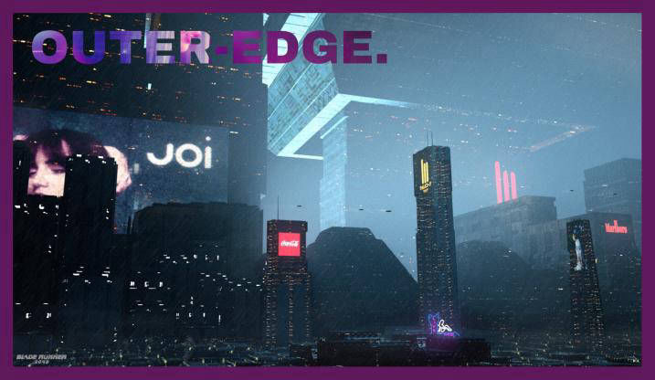
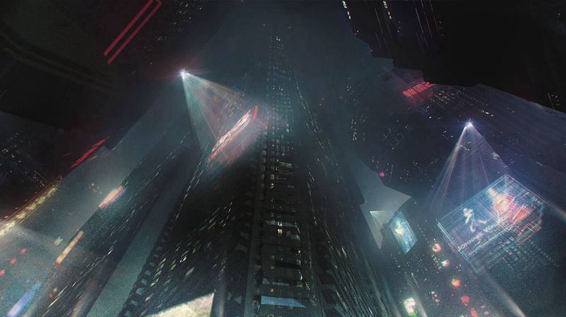
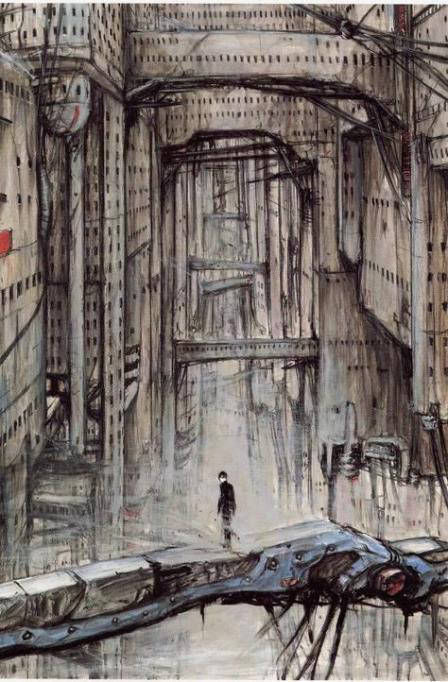
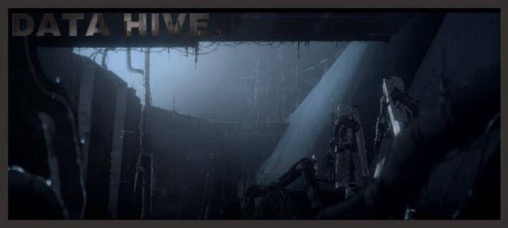
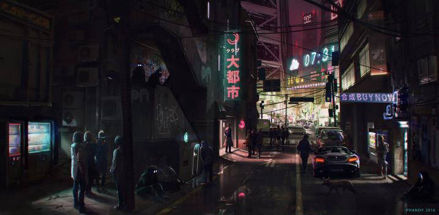

The Data-Hive is a heavily fortified string of equipment that is right next to the beautiful sprawling section of Middle-Weight. Civilians who are crazy enough to venture in these valleys and canyons of the Data-Hive, either starve to death after getting lost, or are brutally killed when found by the robotic defenses.
The Data-Hive houses secure compounds and worship areas for RAPTURE. It’s mind and body exist all throughout this unknown area. It’s swarming with automated robotic defenses. Every section has it’s own defense-grid, of varying sizes. However, enormous fields of technology are left blatant. Each sector is also guarded by a powerful Sector Champion. An enormous automaton built with the purpose to protect and oversee an area.
This region also houses a vast amount of factories, constantly producing equipment, munitions, and bleeding-edge technology that is then shipped out the outer sectors. Necessary in moderation and production, the Data-Hive is the practical brain of the city.
Ritzy and popular for meeting, Middle-Weight has become its own landmark in the world, and tales of the utopia spread throughout the wastes, not just the city.
Glistening, neon, and clean, the Middle-Weight holds the high-class towers and consumerist utopia, with new fashion and foods made nearly every second, accompanied by euphorias of entertainment. A majority of this utopia consists of the extremely wealthy and upper-class, popular celebrities and actors, corporation giants, and crimelords. Middle-Weight tends to be a beacon of hope to those in the Outer-Edge, which also seems to be a nearly untouchable dream to those beneath this daydream of a city.
Middle-Weight, as is in its name, is the weight that surrounds the Data-Hive. Oftentimes, the bliss of Middle-Weight can be overlooked by the sprawling Data-Hives. It’s neon sights and ritzy life, sometimes overshadowed by the authoritarian rule of RAPTURE.
The Middle-Weight Utopia is constantly watched over by floating technological aircrafts that immediately deploy police upon any reports of crime. Middle-Weight is full of narcotics and vice, not too much violent crime.
Lastly, is the gloom darkness of Outer-Edge, surrounding the glistening neon utopia of Middle-Weight. The smog choked Police State is surveyed by human agencies responsible for security, and even with it’s humanitarian like behavior, it forever perpetuates a near civil war with its citizens.
Dominated by the idea of technology, being chock-full of crime, and constantly drowning in the pouring weather, Outer-Edge has an atmosphere of survival and desperation. It’s economy is full of markets and ambitious civilians looking to make a bit of money, trying to reach towards the neon hope looming over them. The only real person one can truly trust is themselves, amid an atmosphere of treachery and constant crime. Many see crime as a necessary way to make a life and exist, and being human and having morals is a real challenge here in Outer-Edge.
The real point of Outer-Edge is to be the stepstool to produce the goods and hold the lesser lives, to make Middle-Weight the Utopia it is.
Sites made with Mobirise are 100% mobile-friendly according the latest Google Test and Google loves those websites (officially)!
Mobirise themes are based on Bootstrap 3 and Bootstrap 4 - most powerful mobile first framework. Now, even if you're not code-savvy, you can be a part of an exciting growing bootstrap community.
Choose from the large selection of latest pre-made blocks - full-screen intro, bootstrap carousel, content slider, responsive image gallery with lightbox, parallax scrolling, video backgrounds, hamburger menu, sticky header and more.
ANTIOCH is a hub civilization, and by far the biggest and most successful wasteland society. Though the word ‘society’ could barely describe it. Littered in trash and thieves, the practical bazaar of a city is full of bars, countless amounts of shops, living spaces, and entertainments found nowhere else in the wasteland.
When on the streets of ANTIOCH, it’s best to keep your mouth shut and eyes forward, generally sticking with your own people. Littered in criminals and street gangs, it’s violent and near lawless streets are not to be reckoned with.
A practical law amongst every band of outlaws, no matter how brutal or destructive, is to keep ANTIOCH safe. Pacts and alliances have formed, and the result is the ADF, or ANTIOCH Defense Force. The ADF is a string of mobs and successful organizations, working together on keeping ANTIOCH safe from the countless amounts of RAPTURE attacks and skirmishes.
The ADF simultaneously runs ANTIOCH, as well as defends it. Serving as a police force to keep the streets off the verge of complete anarchy, along with establishing a government. Though, this ‘government’ is extremely decentralized and loose.